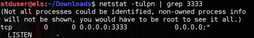
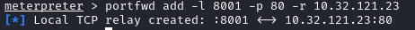
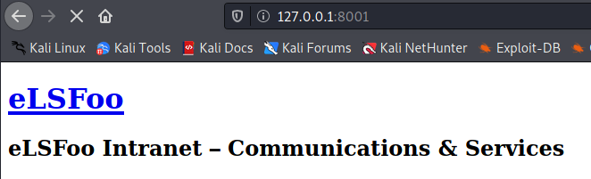
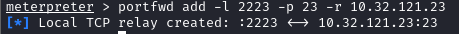
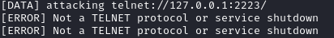

Local Port Forwarding (meterpreter)
Requirements:• Meterpreter session between attacker and pivot host
CONS:• We can targets only a single port
portfwd command is implemented in meterpreter.
It allows us to forward connections to specific addresses and ports on the remote network
OPTIONS:
-L <address> → local IP address to listen on (optional, loopback 0.0.0.0 is default)
-l → local port to listen on (lowercase L)
-p → remote port to connect to
-r → remote host to connect to
ARGUMENTS:
Add → This argument is used to create the forwarding.
Delete → This will delete a previous entry from our list of forwarded ports.
List → This will list all ports currently forwarded.
Flush → This will delete all ports from our forwarding list.
meterpreter > portfwd add -L <IPattackerInterface> -l <AttackerPort> -p <TargetPort> -r <TargetIP>
meterpreter > portfwd #to see the local forwards
the IPattackerInterface is optional, by default is 127.0.0.1
Open a new tab:
netstat -tulpn | grep <AttackerPort> #listening connction
-l → list only the listening ports
-t → list all tcp ports
-u → list all udp ports
-p → Show the PID and name of the program to which each socket belongs
-n or --numeric → show numerical addresses instead of trying to determine symbolic host
Now every service that try to connect to our local ip address on port <AttackerPort> they will be redirected to the <TargetPort> on the host <TargetIP>
example: rdesktop rdesktop 127.0.0.1:<AttackerPort>
every request from our local port 8080 will be forwarded to the <TargetIp> of the site with port 80
portfwd add -l 8080 -p 80 -r <TargetIP> now we have only to open the browser and connect to the internal hosted website(TargetIp) through the exploited machine
 
• connect to Telnet
• cracking telnet service with hydra
WARNING: NOT work to to do that check proxychains!!!
 Bibliography:
•
https://www.offensive-security.com/metasploit-unleashed/portfwd/